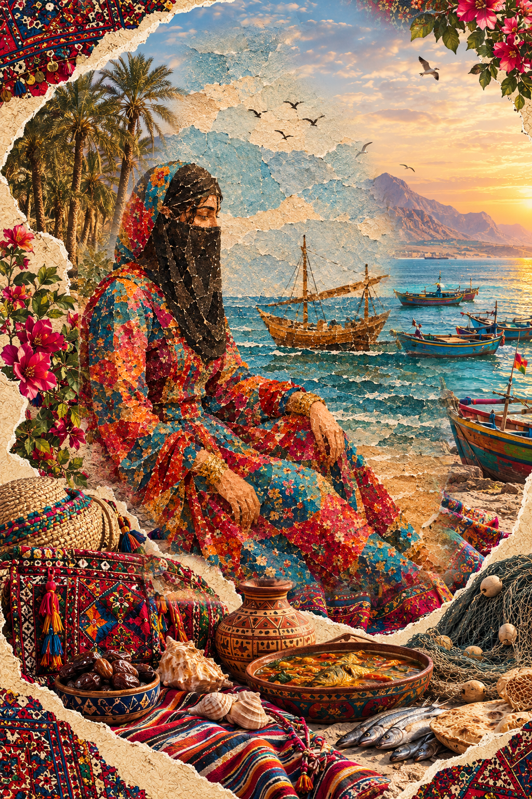
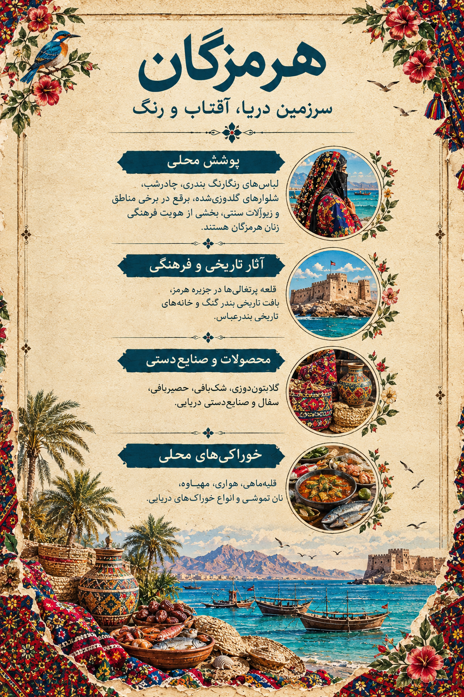

فرهنگ هرمزگان در بندرها، بازارها، روستاهای ساحلی و آبادیهای کشاورزی شکل گرفته است. دریانوردی، ماهیگیری، نخلداری، سفالگری و بافت حصیر بخشی از تجربه زندگی در نقاط مختلف استاناند. Hormozgan's culture has developed through its ports, markets, coastal villages, and agricultural settlements. Seafaring, fishing, date cultivation, pottery, and palm weaving are part of life in different areas of the province.
۱. تصویر هرمزگان؛ روایت یک سرزمین 1. Hormozgan in Art: A Land's Story

اثر تصویری هرمزگان از مجموعه «ایران، هزار رنگ» The Hormozgan artwork from “Iran, A Thousand Colors”
در این اثر، پوشش رنگارنگ زن هرمزگانی در کنار دریا، لنجهای سنتی، نخلها و نشانههایی از زندگی ساحلی قرار گرفته است. رنگهای زنده لباس و نقشهای پارچه، در کنار آبی خلیج فارس، روایتی تصویری از فرهنگ و زندگی مردم جنوب میسازند. This artwork brings together colorful women's dress, the sea, traditional lenj boats, palm trees, and details of coastal life. Vivid fabrics and the blue waters of the Persian Gulf tell a visual story of southern culture.
از نقش پارچههای رنگارنگ تا حرکت لنجها بر آب، هرمزگان قصهی زندگی در کنار دریاست.
From colorful fabrics to lenj boats moving across the water, Hormozgan tells a story of life beside the sea.
این تصویر، اثر هنری مجموعه است؛ توضیحات این صفحه برای معرفی فرهنگی و تاریخی استان ارائه شدهاند. This is the original artwork created for the collection. The text provides cultural and historical context about the province.
۲. پوشش زنان هرمزگان؛ رنگ و هویت 2. Women's Dress in Hormozgan: Color and Identity

لیبل اختصاصی هرمزگان؛ راهنمای تصویری پوشش، میراث و خوراک محلی Hormozgan's exhibition label: a visual guide to dress, heritage, and local food
پوشاک سنتی زنان هرمزگان با توجه به شهر، روستا، شیوه زندگی و مناسبتها تنوع زیادی دارد. لباسهای رنگارنگ، شلوارهای تزئینشده، روسریها و پوششهای سر و صورت از عناصر قابل توجه این فرهنگ پوششی هستند. نوع پارچه، نقشدوزی و شیوه پوشیدن لباس در نقاط مختلف استان یکسان نیست. Traditional women's clothing in Hormozgan varies by town, village, lifestyle, and occasion. Colorful garments, decorated trousers, scarves, and different forms of head and face coverings are notable elements. Fabrics, embroidery, and clothing styles differ across the province.
لباسهای رنگارنگColorful Garments
رنگهای پرنشاط و پارچههای طرحدار در بسیاری از نمونههای پوشاک محلی دیده میشوند. ترکیب لباسها بسته به منطقه و موقعیت استفاده متفاوت است. Bright colors and patterned fabrics appear in many examples of local clothing. Garment combinations vary by area and occasion.
گلابتوندوزیGolābatun Embroidery
در این هنر، نخهای فلزی براق برای ایجاد نقشهای تزئینی روی پارچه به کار میروند. گلابتوندوزی در تزئین برخی لباسها و پوشاک مجلسی جنوب جایگاه دارد. This craft uses shiny metallic threads to create decorative patterns on fabric. Golābatun embroidery is used to embellish some southern garments and ceremonial clothing.
خوسدوزی و بادلهدوزیKhos and Badleh Embroidery
این هنرهای رودوزی با نوارها و نقشهای براق، به تزئین پارچه و لباس کمک میکنند. روش اجرا و کاربرد آنها در جوامع محلی میتواند متفاوت باشد. These embroidery traditions use shiny strips and patterns to decorate fabrics and clothing. Their techniques and uses may differ between local communities.
پوشش سر و صورتHead and Face Coverings
روسری و پوششهای مختلف سر در پوشاک زنان منطقه دیده میشوند. برقع نیز در برخی جوامع ساحلی و بخشهایی از استان کاربرد فرهنگی دارد؛ شکل و شیوه استفاده از آن یکسان نیست. Scarves and different head coverings are part of women's dress in the region. The burqa is also used in some coastal communities, though its form and use are not uniform.
۳. شهرها و روستاها؛ زندگی در کنار خلیج فارس 3. Towns and Villages: Life Beside the Persian Gulf
بندرعباسBandar Abbas
مرکز استان و بندری مهم در خلیج فارس که بازارهای محلی، خوراک دریایی و پوشاک رنگارنگ بخشی از سیمای فرهنگی آن هستند. The provincial capital is an important Persian Gulf port, known for its local markets, seafood, and colorful clothing traditions.
مینابMinab
میناب به بازارهای محلی، کشاورزی گرمسیری، حصیربافی و سنتهای صنایعدستی شناخته میشود. Minab is known for its local markets, tropical agriculture, palm weaving, and handicraft traditions.
بندر کنگBandar Kong
این بندر تاریخی با خانههای بومی، بادگیرها و میراث دریانوردی، بخشی از تاریخ تجارت دریایی جنوب ایران را روایت میکند. This historic port, with its traditional houses, windcatchers, and seafaring heritage, reflects the history of maritime trade in southern Iran.
بستک و مناطق پیرامونBastak and Surrounding Areas
بافتهای مسکونی و معماری بومی این منطقه، جلوههایی از سازگاری زندگی با آبوهوای گرم و سنتهای فرهنگی محلی را نشان میدهند. Local settlements and architecture here reflect ways of adapting to the hot climate and preserving regional traditions.
یادداشت: جزیره قشم در این صفحه بهصورت مستقل معرفی نمیشود تا اطلاعات آن با صفحه اختصاصی قشم تکرار نشود. Note: Qeshm Island is not covered separately here, to avoid duplicating content on its dedicated page.
۴. تاریخ، معماری و طبیعت 4. History, Architecture, and Nature
قلعه پرتغالیهای جزیره هرمزPortuguese Castle on Hormuz Island
این قلعه یادگاری از حضور پرتغالیها در منطقه خلیج فارس در سدههای گذشته است. موقعیت ساحلی و بقایای معماری آن، بخشی از تاریخ رقابت بر سر مسیرهای دریایی را بازگو میکند. This castle dates from the Portuguese presence in the Persian Gulf centuries ago. Its coastal location and surviving structures reflect the history of competition over maritime routes.
بافت تاریخی بندر کنگHistoric Urban Fabric of Bandar Kong
خانههای بومی و عناصر معماری سازگار با آبوهوای گرم، در کنار میراث دریانوردی، بندر کنگ را به یکی از مکانهای مهم برای شناخت تاریخ ساحلی هرمزگان تبدیل کردهاند. Traditional houses and climate-adapted architectural features, together with its seafaring heritage, make Bandar Kong an important place for understanding Hormozgan's coastal history.
پل تاریخی لاتیدانHistoric Latidan Bridge
پل لاتیدان از سازههای تاریخی مسیرهای ارتباطی جنوب ایران است و اهمیت راهها و پیوندهای تجاری گذشته را یادآوری میکند. Latidan Bridge is a historic structure along southern Iran's old routes, recalling the importance of transport and trade connections in the past.
سواحل و نخلستانهاCoastlines and Palm Groves
دریا، نخلستانها و آبوهوای گرم بر اقتصاد، خوراک، صنایعدستی و شیوه زندگی مردم استان تأثیر گذاشتهاند. این پیوند در نقش پارچهها، محصولات بومی و معماری محلی نیز بازتاب دارد. The sea, palm groves, and hot climate influence the province's economy, cuisine, handicrafts, and everyday life. This relationship is also reflected in textiles, local products, and architecture.
۵. طعمهای محلی هرمزگان 5. Local Flavors of Hormozgan
خوراک هرمزگان از ماهی و میگو، برنج، خرما، ادویهها و محصولات محلی تأثیر گرفته است. دستور پختها و نام غذاها ممکن است از شهری به شهر دیگر و از خانوادهای به خانواده دیگر تفاوت داشته باشند. Hormozgan's cuisine draws on fish, shrimp, rice, dates, spices, and local produce. Recipes and dish names may vary between towns and families.
هواری ماهی و میگوFish and Shrimp Hovari
غذایی بر پایه برنج که با ماهی یا میگو و ادویههای محلی آماده میشود. مواد و روش پخت آن در خانوادهها و مناطق مختلف میتواند تفاوت داشته باشد. A rice-based dish prepared with fish or shrimp and local spices. Ingredients and methods can vary between families and areas.
زیبونZiboon
از غذاهای شناختهشده جنوب که معمولاً با ماهی سرخشده، سیبزمینی و برنج تهیه میشود. A well-known southern dish commonly prepared with fried fish, potatoes, and rice.
قلیهماهیFish Ghalieh
خوراکی با ماهی، سبزی و چاشنیهای ترش که در بخشهایی از جنوب ایران و هرمزگان رواج دارد. A fish stew with herbs and tangy seasonings, popular in parts of southern Iran, including Hormozgan.
سوراغSooragh
چاشنی محلی تهیهشده از ماهی و ترکیبات نمکی و ادویهای که در برخی سفرههای بندرعباس و اطراف آن استفاده میشود. A local condiment made from fish with salty and spiced ingredients, used in some households in and around Bandar Abbas.
نان توموشیTomoshi Bread
نان نازک محلی که به روش سنتی پخته میشود و میتواند با مواد گوناگون مانند تخممرغ، پنیر یا سسهای محلی همراه باشد. A thin local bread baked traditionally and served with different fillings or toppings, such as egg, cheese, or local sauces.
رنگینکRanginak
شیرینی خرمایی جنوب ایران که معمولاً با آرد و روغن تهیه میشود و گاهی مغزهایی مانند گردو در آن قرار میگیرد. A southern Iranian date dessert commonly made with flour and oil, sometimes with nuts such as walnuts.
خرما و شیرینیهای خرماییDates and Date Sweets
خرما در خوراک روزانه و پذیرایی محلی جایگاه دارد و در تهیه انواع خوراکیها و شیرینیهای خانگی نیز استفاده میشود. Dates are part of everyday food and hospitality and are also used in homemade sweets and other local treats.
۶. محصولات محلی، سوغات و صنایعدستی 6. Local Products, Souvenirs, and Handicrafts
خرما و فرآوردههای آنDates and Date Products
خرما از محصولات مهم نواحی گرم استان است و به شکل تازه یا در فرآوردههای خوراکی محلی عرضه میشود. Dates are an important crop in the province's warm areas and are sold fresh or as locally prepared food products.
انبه و ترشی انبهMango and Mango Pickle
انبه در بخشهایی از جنوب استان کشت میشود و از آن برای تهیه ترشی و چاشنیهای محلی نیز استفاده میکنند. Mangoes are grown in parts of the southern province and are also used to make pickles and local condiments.
گلابتوندوزیGolābatun Embroidery
یکی از هنرهای رودوزی جنوب که با نخهای فلزی براق، نقشهایی تزئینی روی پارچه ایجاد میکند و در پوشاک و محصولات هنری کاربرد دارد. A southern embroidery tradition using shiny metallic threads to create decorative fabric patterns for clothing and art objects.
خوسدوزی و بادلهدوزیKhos and Badleh Embroidery
این هنرهای تزئینی در برخی پوشاک و پارچههای محلی دیده میشوند و بخشی از میراث هنری زنان منطقهاند. These decorative techniques appear on some local garments and fabrics and form part of the region's textile heritage.
حصیربافیPalm Weaving
با استفاده از برگ درخت خرما، وسایلی مانند سبد، زیرانداز و ظروف کاربردی ساخته میشود. این هنر با محیط نخلستانی جنوب پیوند دارد. Palm leaves are used to make baskets, mats, and useful household objects. This craft is closely linked to the southern palm-growing environment.
سفالگری مینابMinab Pottery
ظروف سفالی و کوزههای سنتی، از جمله جهله، نمونههایی از هنر سفالگری و کاربرد روزمره سفال در منطقه هستند. Traditional pottery, including the jahleh water vessel, reflects local pottery skills and the everyday use of clay objects.
ماهی و میگوFish and Shrimp
محصولات دریایی از تولیدات مهم نواحی ساحلیاند و به صورت تازه یا فرآوریشده در بازارهای محلی عرضه میشوند. Seafood is an important coastal product and is sold fresh or processed in local markets.
۷. منابع و مطالعه بیشتر 7. Sources and Further Reading
- Visit Iran — Iran's Cultural Heritage and Tourism
- UNESCO Intangible Cultural Heritage
- UNESCO World Heritage Centre
- Encyclopaedia Britannica — Iran
برای آشنایی بیشتر با میراث فرهنگی، پوشاک، صنایعدستی و جاذبههای هرمزگان میتوان از منابع گردشگری و فرهنگی زیر آغاز کرد. برای ثبت دقیق نام لباسها و سنتهای هر شهر یا روستا، منابع مردمشناختی و روایت افراد آگاه محلی نیز اهمیت دارند. The following cultural and tourism resources are starting points for exploring Hormozgan's heritage, clothing, handicrafts, and attractions. Ethnographic sources and local knowledge are also valuable for documenting specific clothing traditions. این منابع برای شروع پژوهش هستند؛ جزئیات مربوط به هر اثر تاریخی یا هنر محلی باید با منبع اختصاصی همان موضوع بررسی شود. These resources are starting points. Details about individual historic sites and local crafts should be checked against topic-specific sources.